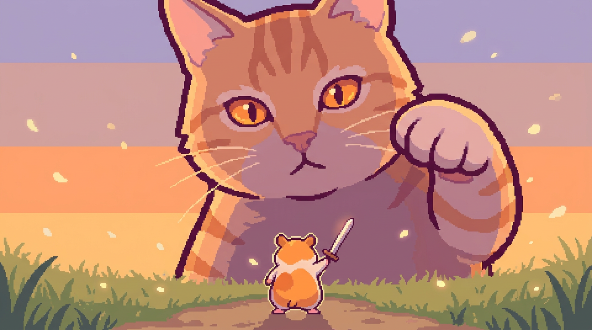
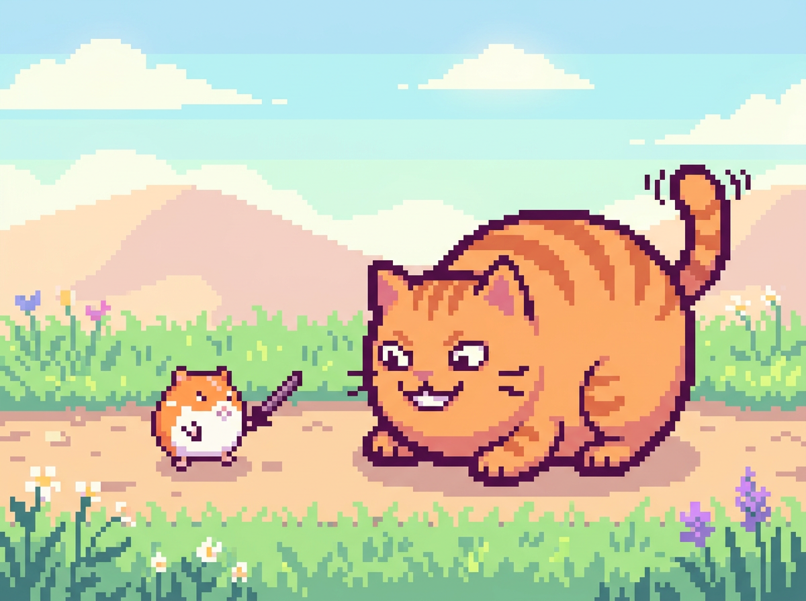
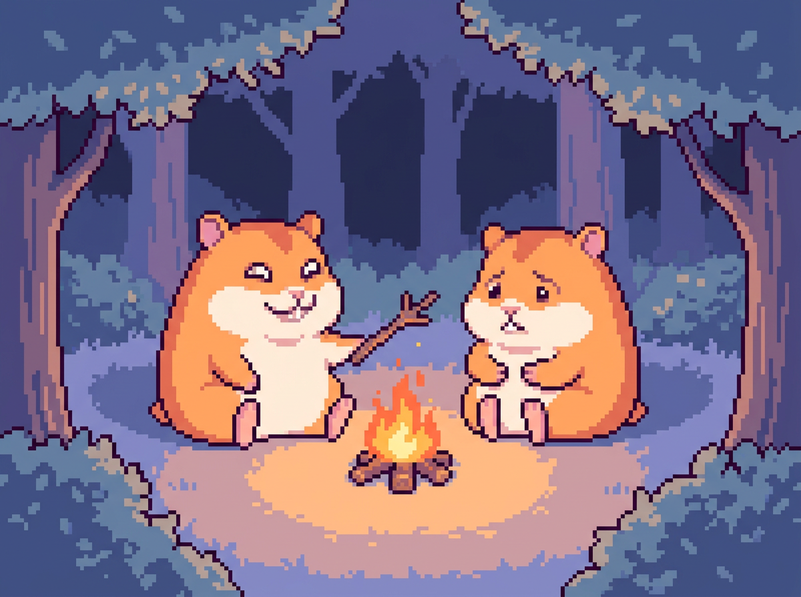
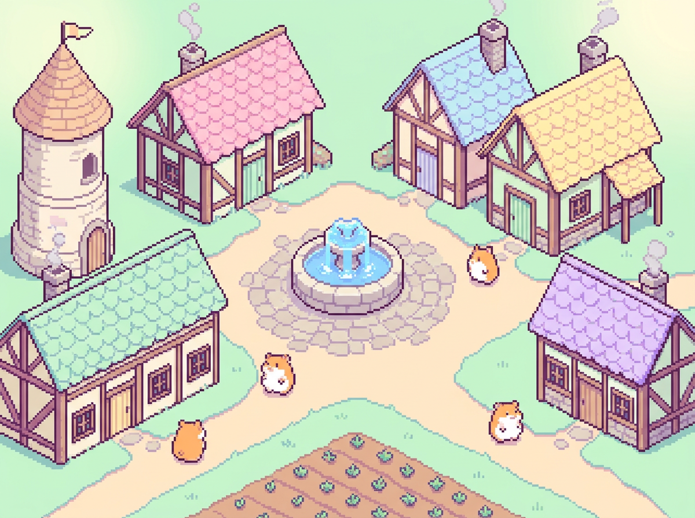
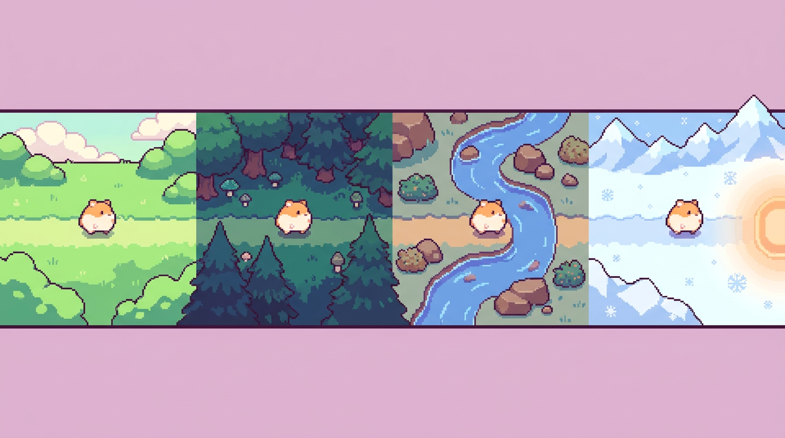
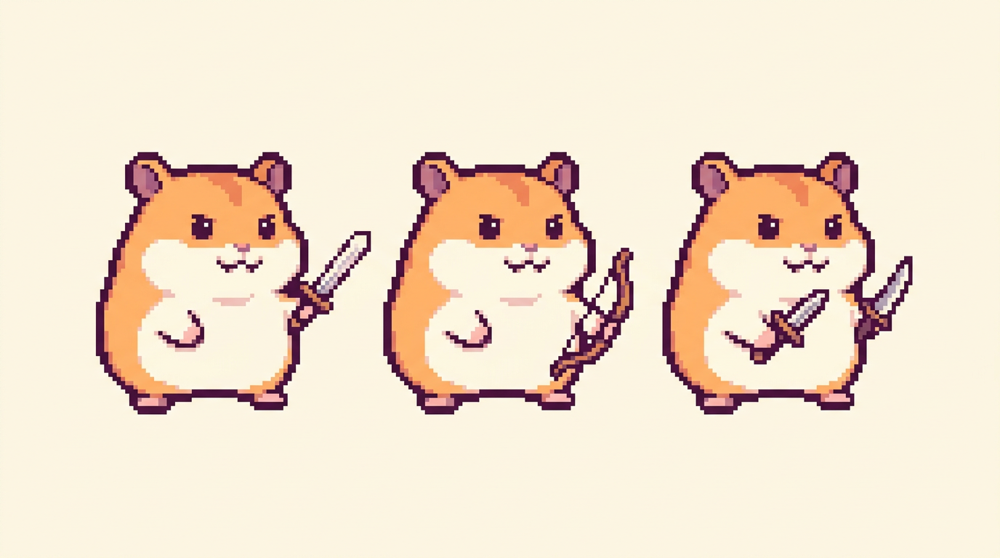

<title>유토피아 GDD</title>
<meta name="claude:viewport-fit-sides" content="cover">
<link rel="preconnect" href="https://fonts.googleapis.com">
<link rel="preconnect" href="https://fonts.gstatic.com" crossorigin>
<link rel="stylesheet" href="https://fonts.googleapis.com/css2?family=Jua&family=IBM+Plex+Sans+KR:wght@400;500;700&family=DotGothic16&display=swap">
<style>
/* Layout: an illustrated field guide. Each section pairs one pixel-art plate with the rules it shows,
   read top to bottom in the order a player meets them: why, loop, events, world, hero, systems, village, scope. */
:root {
  --bg: #F6F7F2;          /* pale meadow paper */
  --surface: #FFFFFF;
  --ink: #3A2F45;         /* the sprites' plum outline */
  --muted: #776C82;
  --line: #E4E1E8;
  --seed: #E39B2E;        /* sunflower seed: the currency, used for emphasis */
  --seed-soft: #FCEFD9;
  --grass: #5E9150;
  --grass-soft: #E6F0DF;
  --danger: #C2554B;
  --danger-soft: #F8E3E0;
  --tbd: #ECEAEF;         /* grey tag = undecided */
  --tbd-ink: #6E6878;

  --f-display: "Jua", "IBM Plex Sans KR", system-ui, sans-serif;
  --f-body: "IBM Plex Sans KR", "Apple SD Gothic Neo", "Malgun Gothic", system-ui, sans-serif;
  --f-pixel: "DotGothic16", ui-monospace, "SFMono-Regular", monospace;

  --step-0: 1rem;
  --step-1: 1.15rem;
  --step-2: 1.45rem;
  --step-3: 1.9rem;
  --step-4: clamp(2.3rem, 6vw, 3.6rem);
  --radius: 14px;
}
@media (prefers-color-scheme: dark) {
  :root:not([data-theme="light"]) {
    --bg: #1C1922; --surface: #26212D; --ink: #EEE8F3; --muted: #A79DB2; --line: #3A3443;
    --seed: #F1B34E; --seed-soft: #3A2E1D; --grass: #8CC07C; --grass-soft: #22301F;
    --danger: #E58378; --danger-soft: #3B2323; --tbd: #35303D; --tbd-ink: #B5ADBF;
    color-scheme: dark;
  }
}
:root[data-theme="dark"] {
  --bg: #1C1922; --surface: #26212D; --ink: #EEE8F3; --muted: #A79DB2; --line: #3A3443;
  --seed: #F1B34E; --seed-soft: #3A2E1D; --grass: #8CC07C; --grass-soft: #22301F;
  --danger: #E58378; --danger-soft: #3B2323; --tbd: #35303D; --tbd-ink: #B5ADBF;
  color-scheme: dark;
}

* { box-sizing: border-box; }
body {
  background: var(--bg);
  color: var(--ink);
  font-family: var(--f-body);
  font-size: var(--step-0);
  line-height: 1.7;
  word-break: keep-all;
  overflow-wrap: anywhere;
}
.page {
  max-width: 1080px;
  margin: 0 auto;
  padding-block: 32px 56px;
  padding-left: max(16px, env(safe-area-inset-left, 0px));
  padding-right: max(16px, env(safe-area-inset-right, 0px));
  display: grid;
  gap: 56px;
}
h1, h2, h3 { font-family: var(--f-display); font-weight: 400; line-height: 1.25; text-wrap: balance; margin: 0; }
h2 { font-size: var(--step-3); }
h3 { font-size: var(--step-1); }
p { margin: 0; }
ul, ol { margin: 0; padding: 0; list-style: none; }
img.plate {
  display: block;
  width: 100%;
  height: auto;
  border-radius: var(--radius);
  background: var(--line);
}
/* The zone panorama sits in a band across the middle of its canvas; show only the band. */
img.plate.band { aspect-ratio: 1376 / 380; object-fit: cover; object-position: center; }
figure { margin: 0; display: grid; gap: 8px; }
figcaption { font-size: 0.85rem; color: var(--muted); }
strong { font-weight: 700; }

.eyebrow {
  font-family: var(--f-pixel);
  font-size: 0.85rem;
  letter-spacing: 0.08em;
  color: var(--grass);
  text-transform: uppercase;
}
.section-head { display: grid; gap: 6px; }
.section-head p { color: var(--muted); max-width: 60ch; }

.tag {
  display: inline-block;
  font-size: 0.75rem;
  line-height: 1.6;
  padding: 1px 8px;
  border-radius: 999px;
  background: var(--tbd);
  color: var(--tbd-ink);
  white-space: nowrap;
  vertical-align: 2px;
}
.star { color: var(--seed); font-weight: 700; }

/* ---------- Hero ---------- */
.hero { display: grid; gap: 20px; }
.hero-top { display: flex; flex-wrap: wrap; align-items: flex-end; justify-content: space-between; gap: 16px; }
/* Poster: the title sits in the empty sky to the left of the giant cat, like a game key visual. */
.poster { position: relative; }
.poster-title {
  position: absolute;
  left: 4%;
  top: 7%;
  width: 25%;
  display: grid;
  gap: 4px;
}
.poster h1 {
  font-size: clamp(1.4rem, 4.6vw, 3.5rem);
  line-height: 1.05;
  color: #FFF8EC;
  -webkit-text-stroke: 0.06em #3A2F45;
  paint-order: stroke fill;
  text-shadow: 0 0.08em 0 #3A2F45;
}
.poster h1 span { display: block; white-space: nowrap; }
.poster .working { color: #FFF8EC; font-weight: 700; text-shadow: 0 1px 0 #3A2F45, 0 0 6px #3A2F45; }
h1 { font-size: var(--step-4); }
.working { font-size: 0.9rem; color: var(--muted); }
.genre { display: flex; flex-wrap: wrap; gap: 8px; }
.genre span {
  font-size: 0.85rem;
  font-weight: 500;
  padding: 3px 12px;
  border-radius: 999px;
  border: 1.5px solid var(--ink);
}
.logline { font-size: var(--step-1); font-weight: 500; max-width: 52ch; }
.logline .slogan { display: block; font-family: var(--f-display); font-weight: 400; font-size: var(--step-2); color: var(--seed); }
.meta { display: flex; flex-wrap: wrap; gap: 8px 24px; font-size: 0.92rem; color: var(--muted); }
.meta b { color: var(--ink); font-weight: 700; margin-right: 6px; }

.theme {
  background: var(--seed-soft);
  border-radius: var(--radius);
  padding: 24px clamp(18px, 4vw, 32px);
  display: grid;
  gap: 8px;
}
.theme q { font-family: var(--f-display); font-size: var(--step-3); quotes: "“" "”"; line-height: 1.3; }
.theme p { max-width: 62ch; }

/* ---------- Core loop ---------- */
.loop {
  display: grid;
  grid-template-columns: repeat(5, minmax(0, 1fr));
  gap: 10px;
  counter-reset: step;
}
.loop li {
  counter-increment: step;
  background: var(--surface);
  border: 1.5px solid var(--line);
  border-radius: var(--radius);
  padding: 14px;
  display: grid;
  align-content: start;
  gap: 4px;
  position: relative;
}
.loop li::before {
  content: counter(step);
  font-family: var(--f-pixel);
  font-size: 0.8rem;
  color: var(--muted);
}
.loop li.choice { background: var(--seed-soft); border-color: transparent; }
/* Arrows between steps on the one-row layout; the stacked phone layout reads in order without them. */
.loop li:not(:last-child)::after {
  content: "→";
  position: absolute;
  right: -10px;
  top: 50%;
  transform: translate(50%, -50%);
  font-weight: 700;
  color: var(--muted);
  background: var(--bg);
  line-height: 1;
  padding: 2px 0;
  z-index: 1;
}
.loop-back { font-size: 0.9rem; color: var(--muted); text-align: right; }
.loop li.stage { grid-column: span 1; }
.loop small { color: var(--muted); font-size: 0.85rem; line-height: 1.5; }
.rounds { display: flex; flex-wrap: wrap; gap: 4px; margin-top: 4px; }
.rounds span {
  font-family: var(--f-pixel);
  font-size: 0.72rem;
  padding: 1px 6px;
  border-radius: 6px;
  background: var(--grass-soft);
  color: var(--grass);
}
.rounds span.ev { background: var(--seed); color: #2B2117; }
.loop-note { display: grid; gap: 10px; }
.outcomes { display: grid; grid-template-columns: repeat(2, minmax(0, 1fr)); gap: 10px; }
.outcome { padding: 14px 16px; border-radius: var(--radius); display: grid; gap: 2px; }
.outcome.home { background: var(--grass-soft); }
.outcome.dead { background: var(--danger-soft); }
.outcome h3 { font-size: var(--step-0); font-family: var(--f-body); font-weight: 700; }
.outcome.home h3 { color: var(--grass); }
.outcome.dead h3 { color: var(--danger); }

.pillars { display: grid; grid-template-columns: repeat(3, minmax(0, 1fr)); gap: 10px; }
.pillars li { display: grid; gap: 4px; padding: 16px; border-top: 3px solid var(--ink); background: var(--surface); }
.pillars p { color: var(--muted); font-size: 0.95rem; }

/* ---------- Plate + text sections ---------- */
.split { display: grid; grid-template-columns: minmax(0, 1.05fr) minmax(0, 1fr); gap: 28px; align-items: start; }
.split.flip > figure { order: 2; }
.stack { display: grid; gap: 16px; min-width: 0; }

.event-card {
  background: var(--surface);
  border: 1.5px solid var(--ink);
  border-radius: var(--radius);
  padding: 18px;
  display: grid;
  gap: 12px;
}
.event-card .who { font-size: 0.85rem; color: var(--muted); }
.event-card .say { font-family: var(--f-display); font-size: var(--step-2); }
.choices { display: grid; gap: 8px; }
.choices li { display: grid; grid-template-columns: auto minmax(0, 1fr); gap: 4px 12px; align-items: baseline; padding: 10px 12px; border-radius: 10px; background: var(--bg); }
.choices .pick { font-weight: 700; white-space: nowrap; }
.odds { display: flex; flex-wrap: wrap; gap: 6px; }
.odds span { font-size: 0.82rem; padding: 0 8px; border-radius: 999px; }
.odds .bad { background: var(--danger-soft); color: var(--danger); }
.odds .good { background: var(--grass-soft); color: var(--grass); }
.hint { font-size: 0.9rem; color: var(--muted); }

.facts { display: grid; gap: 0; }
.facts > div { display: grid; grid-template-columns: 5.5em minmax(0, 1fr); gap: 12px; padding: 10px 0; border-bottom: 1px solid var(--line); }
.facts > div:first-child { padding-top: 0; }
.facts dt, .facts .k { font-weight: 700; color: var(--grass); }
.facts dd { margin: 0; }

.zones { display: grid; grid-template-columns: repeat(4, minmax(0, 1fr)); gap: 6px; }
.zones span { text-align: center; font-size: 0.9rem; font-weight: 700; padding: 6px 4px; border-radius: 8px; color: #fff; }
.z1 { background: #7FAE5B; } .z2 { background: #4F7A45; } .z3 { background: #4E86A8; } .z4 { background: #8C9AAE; }

.classes { display: grid; grid-template-columns: repeat(3, minmax(0, 1fr)); gap: 8px; text-align: center; }
.classes div { padding: 10px 6px; border-radius: 10px; background: var(--surface); border: 1.5px solid var(--line); display: grid; gap: 2px; }
.classes b { font-family: var(--f-display); font-weight: 400; font-size: var(--step-1); }
.classes small { color: var(--muted); font-size: 0.82rem; }
.voice {
  font-family: var(--f-display);
  font-size: var(--step-2);
  background: var(--seed-soft);
  border-radius: var(--radius);
  padding: 14px 18px;
}
.voice .tag { font-family: var(--f-body); }

/* ---------- Systems ---------- */
.systems { display: grid; grid-template-columns: repeat(3, minmax(0, 1fr)); gap: 10px; }
.systems > div { background: var(--surface); border-radius: var(--radius); padding: 16px; display: grid; gap: 6px; align-content: start; border: 1.5px solid var(--line); }
.systems h3 { color: var(--grass); }
.systems p { font-size: 0.95rem; }
.systems .wide { grid-column: span 2; }
.numbers { display: grid; grid-template-columns: repeat(6, minmax(0, 1fr)); gap: 10px; margin: 0; }
.numbers div { display: grid; gap: 2px; padding: 12px 8px; text-align: center; border-radius: 10px; background: var(--seed-soft); }
.numbers dt { font-family: var(--f-pixel); font-size: var(--step-2); color: var(--ink); font-variant-numeric: tabular-nums; }
.numbers dd { margin: 0; font-size: 0.82rem; color: var(--muted); }

/* ---------- Milestone + assets ---------- */
.check { display: grid; gap: 8px; }
.check li { display: grid; grid-template-columns: 1.4em minmax(0, 1fr); gap: 8px; }
.check li::before { content: "▢"; color: var(--seed); font-weight: 700; }
.later { font-size: 0.92rem; color: var(--muted); padding-top: 8px; border-top: 1px dashed var(--line); }
.later b { color: var(--grass); }

.assets { display: grid; grid-template-columns: repeat(5, minmax(0, 1fr)); gap: 18px; }
.assets h3 { font-family: var(--f-body); font-weight: 700; font-size: 0.95rem; padding-bottom: 6px; border-bottom: 2px solid var(--ink); margin-bottom: 8px; }
.assets li { font-size: 0.9rem; padding: 3px 0 3px 1.3em; text-indent: -1.3em; color: var(--muted); }
.assets li.m1 { color: var(--ink); }
.assets li.m1::before { content: "★ "; color: var(--seed); }
.assets li:not(.m1)::before { content: "· "; }

/* ---------- Sixth sense ---------- */
.sense { display: grid; grid-template-columns: repeat(2, minmax(0, 1fr)); gap: 8px; }
.sense > div { padding: 10px 12px; border-radius: 10px; background: var(--bg); display: grid; gap: 2px; }
.sense .high { background: var(--danger-soft); }
.sense .lv { font-size: 0.78rem; font-weight: 700; color: var(--muted); }
.sense .high .lv, .sense em { color: var(--danger); }
.sense p { font-size: 0.92rem; }

/* ---------- Event list: cause → action → result ---------- */
.evlist { display: grid; gap: 8px; }
.evlist li {
  display: grid;
  grid-template-columns: 2.6em minmax(0, 1fr);
  gap: 2px 8px;
  padding: 12px 14px;
  border-radius: 12px;
  background: var(--surface);
  border: 1.5px solid var(--line);
  font-size: 0.92rem;
}
.evlist b { grid-column: 1 / -1; font-family: var(--f-display); font-weight: 400; font-size: 1.1rem; color: var(--grass); }
.evlist span { display: contents; }
.evlist span::before { font-size: 0.75rem; font-weight: 700; color: var(--muted); padding-top: 2px; }
.evlist span:nth-of-type(1)::before { content: "원인"; }
.evlist span:nth-of-type(2)::before { content: "행동"; }
.evlist span:nth-of-type(3)::before { content: "결과"; }
.evlist .do { font-weight: 700; }
.intro, .loop-foot, .cols { display: grid; gap: 20px; }
.loop-foot { gap: 10px; }
.cols { gap: 56px; }

/* ---------- One run ---------- */
.run { display: grid; grid-template-columns: repeat(4, minmax(0, 1fr)); gap: 10px; }
.run li { display: grid; gap: 6px; align-content: start; padding: 14px; border-radius: var(--radius); background: var(--surface); border: 1.5px solid var(--line); }
.run p { font-size: 0.95rem; }
.act { justify-self: start; font-size: 0.8rem; font-weight: 700; padding: 1px 10px; border-radius: 999px; background: var(--grass-soft); color: var(--grass); }
.act.end { background: var(--danger-soft); color: var(--danger); }

/* ---------- Tone / relations / visuals ---------- */
.trio { display: grid; grid-template-columns: repeat(3, minmax(0, 1fr)); gap: 10px; }
.trio > div { display: grid; gap: 10px; align-content: start; padding: 16px; border-radius: var(--radius); background: var(--surface); border: 1.5px solid var(--line); min-width: 0; }
.trio h3 { color: var(--grass); }
.lines { display: grid; gap: 8px; margin: 0; }
.lines dt { font-size: 0.8rem; font-weight: 700; color: var(--muted); }
.lines dd { margin: 0; font-size: 0.93rem; }
.swatches { display: grid; gap: 6px; }
.swatches li { display: flex; align-items: center; gap: 10px; font-size: 0.92rem; }
.swatches i { flex: none; width: 26px; height: 26px; border-radius: 8px; border: 1.5px solid var(--line); }
.keys { font-size: 0.9rem; color: var(--muted); }

/* ---------- Mobile screens: three portrait phone mockups built from the plates ---------- */
.mobile { display: grid; grid-template-columns: minmax(0, 700px) minmax(0, 1fr); gap: 28px; align-items: start; }
.phones { display: grid; grid-template-columns: repeat(3, minmax(0, 1fr)); gap: 18px; }
.phone-fig { display: grid; gap: 10px; min-width: 0; align-content: start; }
.phone-fig figcaption { font-size: 0.88rem; color: var(--ink); }
.phone-fig figcaption b { display: block; font-family: var(--f-display); font-weight: 400; font-size: var(--step-1); color: var(--grass); }
.phone {
  aspect-ratio: 9 / 19.5;
  border-radius: 30px;
  padding: 7px;
  background: #2B2433;
  box-shadow: 0 10px 24px rgba(58, 47, 69, 0.18);
  position: relative;
  /* Keep the 9:19.5 shape even when a screen's content would like more room. */
  min-height: 0;
  overflow: hidden;
}
/* Dynamic-island pill. */
.phone::before { content: ""; position: absolute; top: 13px; left: 50%; width: 30%; height: 11px; transform: translateX(-50%); border-radius: 999px; background: #2B2433; z-index: 3; }
.screen {
  height: 100%;
  border-radius: 24px;
  overflow: hidden;
  display: flex;
  flex-direction: column;
  background: #FBF6EE;
  color: #3A2F45;
  font-size: 11px;
  line-height: 1.4;
}
.screen .hud { display: flex; justify-content: space-between; gap: 4px; padding: 30px 12px 8px; font-family: var(--f-pixel); font-size: 10px; background: #FFF8EC; }
.screen .hud .seeds { color: #B8741A; }
.screen .view { position: relative; flex: 1; min-height: 0; }
/* Absolutely placed so a plate's natural size never stretches its phone. */
.screen .view img { position: absolute; inset: 0; width: 100%; height: 100%; object-fit: cover; display: block; }
.screen .dock { padding: 10px 10px 16px; display: grid; gap: 6px; background: #FFF8EC; }
.screen .dock p { font-size: 10px; color: #776C82; text-align: center; }
.screen .btn { display: block; text-align: center; font-weight: 700; padding: 8px 6px; border-radius: 12px; background: #FFE3B8; border: 1.5px solid #3A2F45; }
.screen .btn.alt { background: #FFFFFF; }
/* Battle: Pokémon-style bars, foe top right, player bottom left. */
/* Squarer arena so both the hamster and the cat fit; a short combat log fills the space below. */
.screen.battle .view { flex: none; aspect-ratio: 1 / 1.1; }
.screen.battle .view img { object-position: 28% center; }
.log { flex: 1; min-height: 0; padding: 8px 12px; display: grid; gap: 3px; align-content: start; font-size: 10px; color: #776C82; background: #FBF6EE; }
.log b { color: #3A2F45; }
.hp { position: absolute; display: grid; gap: 2px; padding: 4px 6px; border-radius: 8px; background: rgba(255, 248, 236, 0.92); border: 1.5px solid #3A2F45; font-size: 9px; font-weight: 700; width: 46%; }
.hp i { display: block; height: 5px; border-radius: 3px; background: linear-gradient(90deg, #6FB35A var(--hp), #E8E1EA var(--hp)); }
.hp.foe { top: 8px; right: 8px; width: 42%; }
.hp.me { width: 42%; }
.hp.foe i { background: linear-gradient(90deg, #D9675B var(--hp), #E8E1EA var(--hp)); }
/* Both boxes sit in the empty sky so the hamster and the cat stay visible below. */
.hp.me { top: 8px; left: 8px; }
.auto { position: absolute; bottom: 8px; left: 8px; font-family: var(--f-pixel); font-size: 10px; padding: 1px 6px; border-radius: 6px; background: #3A2F45; color: #FFF8EC; }
.slots { display: flex; justify-content: center; gap: 6px; }
.slots span { width: 34px; height: 34px; border-radius: 10px; display: grid; place-items: center; font-size: 9px; background: #EFE4F7; border: 1.5px solid #B9A7D6; }
.slots span.off { background: #ECEAEF; border-style: dashed; color: #A79DB2; }
/* Event: the choice buttons sit in the thumb zone at the bottom. */
.screen.event .view img { object-position: center; }
.screen.event .card { padding: 10px; display: grid; gap: 4px; background: #FFFFFF; border-top: 1.5px solid #3A2F45; }
.screen.event .card .say { font-family: var(--f-display); font-size: 13px; }
.screen.event .card em { color: #C2554B; font-size: 10px; }
/* Village: a tap ring over a building and a "!" over a roaming hamster. */
.screen.village .view img { object-position: 45% center; }
.tap { position: absolute; width: 34px; height: 34px; margin: -17px 0 0 -17px; border-radius: 50%; border: 3px solid #FFF8EC; box-shadow: 0 0 0 2px #3A2F45, 0 0 0 7px rgba(255, 248, 236, 0.55); }
.bubble { position: absolute; transform: translate(-50%, -100%); white-space: nowrap; font-size: 10px; font-weight: 700; padding: 2px 7px; border-radius: 8px; background: #FFF8EC; border: 1.5px solid #3A2F45; }
.bubble.bang { background: #E39B2E; color: #2B2117; }
.bubble.me { background: #FFE3B8; }
.mobile-notes { display: grid; gap: 10px; align-content: start; }
.mobile-notes li { display: grid; gap: 2px; padding: 12px 14px; border-radius: 12px; background: var(--surface); border: 1.5px solid var(--line); }
.mobile-notes b { font-weight: 700; }
.mobile-notes span { font-size: 0.92rem; color: var(--muted); }

/* ---------- Party: who is who among the hamsters ---------- */
.solo { display: flex; flex-wrap: wrap; align-items: center; gap: 8px 14px; padding: 14px 18px; border-radius: var(--radius); background: var(--grass-soft); }
.solo b { font-family: var(--f-display); font-weight: 400; font-size: var(--step-2); color: var(--grass); }
.solo span { font-size: 0.95rem; }
.party { display: grid; grid-template-columns: repeat(4, minmax(0, 1fr)); gap: 10px; }
.party li { display: grid; gap: 8px; align-content: start; padding: 16px; border-radius: var(--radius); background: var(--surface); border: 1.5px solid var(--line); }
.party li.me { border-color: var(--seed); background: var(--seed-soft); }
.party li.ally { border-color: var(--grass); }
.party .who { display: flex; align-items: baseline; justify-content: space-between; gap: 8px; }
.party h3 { font-size: var(--step-1); }
.party .count { font-family: var(--f-pixel); font-size: 0.8rem; color: var(--muted); white-space: nowrap; }
.party dl { margin: 0; display: grid; gap: 6px; }
.party dt { font-size: 0.75rem; font-weight: 700; color: var(--muted); }
.party dd { margin: 0; font-size: 0.92rem; }

footer { display: flex; flex-wrap: wrap; justify-content: space-between; gap: 8px 24px; font-size: 0.85rem; color: var(--muted); border-top: 2px solid var(--ink); padding-top: 14px; }

@media (max-width: 860px) {
  .loop { grid-template-columns: repeat(2, minmax(0, 1fr)); }
  .loop li.stage { grid-column: 1 / -1; }
  .loop li::after { display: none; }
  .split, .split.flip { grid-template-columns: minmax(0, 1fr); }
  .split.flip > figure { order: 0; }
  .systems { grid-template-columns: repeat(2, minmax(0, 1fr)); }
  .assets { grid-template-columns: repeat(2, minmax(0, 1fr)); }
  .numbers { grid-template-columns: repeat(3, minmax(0, 1fr)); }
  .run { grid-template-columns: repeat(2, minmax(0, 1fr)); }
  .trio { grid-template-columns: minmax(0, 1fr); }
}
/* Below the wide sheet the notes move under the phones instead of squeezing beside them. */
@media (max-width: 1399px) {
  .mobile { grid-template-columns: minmax(0, 1fr); }
  .mobile-notes { grid-template-columns: repeat(auto-fit, minmax(220px, 1fr)); }
}
@media (max-width: 860px) { .party { grid-template-columns: repeat(2, minmax(0, 1fr)); } }
@media (max-width: 560px) { .party { grid-template-columns: minmax(0, 1fr); } }
@media (max-width: 560px) {
  /* Phones stay readable at full size and swipe sideways inside their own strip. */
  .phones { grid-template-columns: repeat(3, 190px); overflow-x: auto; scroll-snap-type: x mandatory; padding-bottom: 8px; }
  .phone-fig { scroll-snap-align: start; }
  .page { gap: 44px; }
  /* Too narrow to overlay without covering the cat: the title drops below the poster. */
  .poster-title { position: static; width: auto; margin-top: 12px; }
  .poster h1 { color: var(--ink); -webkit-text-stroke: 0; text-shadow: none; font-size: var(--step-4); }
  .poster h1 span { display: inline; }
  .poster .working { color: var(--muted); text-shadow: none; }
  .outcomes, .pillars, .systems, .run, .sense { grid-template-columns: minmax(0, 1fr); }
  .systems .wide { grid-column: auto; }
  .assets { grid-template-columns: minmax(0, 1fr); }
  .facts > div { grid-template-columns: minmax(0, 1fr); gap: 0; }
}

/* Wide screens (and the submission PNG): poster beside the intro, loop in one band, then the sections sit in
   column groups (2 across, 4 across on very wide screens) so the GDD reads as one sheet instead of a long scroll. */
.col { display: grid; gap: 56px; align-content: start; min-width: 0; }
@media (min-width: 1400px) {
  .page { max-width: 1640px; gap: 36px; }
  .hero { grid-template-columns: minmax(0, 1.3fr) minmax(0, 1fr); align-items: center; gap: 32px; }
  .intro { gap: 16px; }
  .theme q { font-size: var(--step-2); }
  .poster-title { width: auto; }
  .poster h1 { font-size: 3rem; }
  .loop-foot { grid-template-columns: minmax(0, 2fr) minmax(0, 3fr); align-items: stretch; }
  .loop-foot .pillars li { padding: 12px 14px; }
  /* Two columns; the browser balances the sections between them, each section kept whole. */
  .cols { display: block; column-count: 2; column-gap: 40px; }
  .col { display: contents; }
  .cols section { break-inside: avoid; margin-bottom: 36px; }
  .cols .split, .cols .split.flip { grid-template-columns: minmax(0, 1fr); gap: 14px; }
  .cols .split.flip > figure { order: 0; }
  .cols figure img.plate:not(.band) { aspect-ratio: 16 / 9; object-fit: cover; }
  .cols h2 { font-size: var(--step-2); }
  .cols .systems { grid-template-columns: repeat(2, minmax(0, 1fr)); }
  .cols .systems .wide { grid-column: span 2; }
  .cols .numbers { grid-template-columns: repeat(3, minmax(0, 1fr)); }
  .cols .trio { grid-template-columns: minmax(0, 1fr); }
  .cols .assets { grid-template-columns: repeat(2, minmax(0, 1fr)); gap: 14px; }
  .cols .run { grid-template-columns: repeat(2, minmax(0, 1fr)); }
  .cols .facts > div { padding: 7px 0; }
}
</style>

<main class="page">

  <header class="hero">
    <div class="poster">
      
      <div class="poster-title">
        <h1><span>유토피아</span></h1>
      </div>
    </div>
    <div class="intro">
    <div class="hero-top">
      <div class="genre"><span>📱 모바일 세로 화면</span><span>싱글 플레이</span><span>이벤트 선택형 로그라이크 RPG</span><span>2D 픽셀아트</span><span>사이드뷰 자동 전투</span><span>판타지</span></div>
    </div>
    <p class="logline"><span class="slogan">싸움은 자동, 생존은 선택.</span> 고양이 영역을 지나는 햄스터 탐색자의 자동 전투 로그라이크인데, 살아남느냐는 쏟아지는 이벤트 앞에서 내리는 판단 하나로 갈리는 게임.</p>
    <div class="meta">
      <span><b>플랫폼</b>모바일 (iOS 우선) · 세로 화면 · 한 손 탭 조작</span>
      <span><b>플레이 인원</b>싱글 플레이 (주인공 1명 + AI 동료)</span>
      <span><b>시점</b>전투는 포켓몬 배틀처럼 마주 보는 사이드뷰(조작 없음), 마을은 탑다운(건물 탭으로 입장)</span>
      <span><b>플레이 호흡</b>스테이지당 1~2분 (출퇴근 지하철)</span>
      <span><b>레퍼런스</b>60 Seconds! (랜덤 이벤트 선택과 한정된 자원으로 버티는 생존)</span>
    </div>
    <div class="theme" aria-label="핵심 테마">
      <span class="eyebrow">Core theme</span>
      <q>더 갈 것인가, 살아서 돌아갈 것인가</q>
      <p>작은 피식자에게 필요한 건 용맹이 아니라 <strong>물러설 때를 아는 판단</strong>이다. 탐색자는 매번 바뀌지만, 판단력은 플레이어에게 쌓인다.</p>
    </div>
    </div>
  </header>

  <section class="stack" aria-labelledby="mobile-h">
    <div class="section-head">
      <span class="eyebrow">Mobile · Portrait</span>
      <h2 id="mobile-h">폰 세로 화면, 한 손으로 하는 게임</h2>
      <p>화면은 세 가지뿐이다. 싸움은 지켜보고, 이벤트에서 고르고, 마을에서 탭한다. 드래그도 연타도 없다.</p>
    </div>
    <div class="mobile">
      <div class="phones">
        <figure class="phone-fig">
          <div class="phone"><div class="screen battle">
            <div class="hud"><span>초원 2-3</span><span>라운드 3/5</span><span class="seeds">씨앗 128</span></div>
            <div class="view">
              
              <span class="auto">AUTO</span>
              <div class="hp foe">고양이<i style="--hp:35%"></i></div>
              <div class="hp me">주인공 Lv4<i style="--hp:62%"></i>동료 (AI)<i style="--hp:80%"></i></div>
            </div>
            <div class="log">
              <span><b>주인공</b>의 공격! 고양이에게 12</span>
              <span><b>동료</b>의 공격! 고양이에게 7</span>
              <span><b>고양이</b>의 할퀴기! 주인공에게 8</span>
              <span><b>영혼 스킬</b> 자동 발동</span>
            </div>
            <div class="dock">
              <div class="slots"><span>영혼</span><span class="off">잠김</span><span class="off">잠김</span></div>
              <p>조작 없음 · 영혼 스킬도 자동 발동</p>
            </div>
          </div></div>
          <figcaption><b>① 전투: 지켜본다</b>포켓몬 배틀처럼 주인공(과 AI 동료)이 고양이와 마주 보고 자동으로 싸운다. 이동·공격 조작 없음.</figcaption>
        </figure>
        <figure class="phone-fig">
          <div class="phone"><div class="screen event">
            <div class="hud"><span>초원 2-3</span><span>이벤트</span><span class="seeds">씨앗 128</span></div>
            <div class="view">
              
              <span class="bubble" style="left:28%; top:30%">다른 탐색자</span>
              <span class="bubble me" style="left:72%; top:30%">주인공</span>
            </div>
            <div class="card">
              <span>다른 탐색자 햄스터</span>
              <span class="say">"서로 망 봐 주며 쉬자."</span>
              <em>…뭔가 불길한 느낌이 든다. (육감)</em>
            </div>
            <div class="dock">
              <span class="btn">수락</span>
              <span class="btn alt">의심</span>
              <span class="btn alt">거절</span>
            </div>
          </div></div>
          <figcaption><b>② 이벤트: 고른다</b>선택지는 엄지가 닿는 화면 아래쪽 큰 버튼. 플레이어의 조작은 대부분 여기서 일어난다.</figcaption>
        </figure>
        <figure class="phone-fig">
          <div class="phone"><div class="screen village">
            <div class="hud"><span>마을</span><span>Lv 4</span><span class="seeds">씨앗 128</span></div>
            <div class="view">
              
              <span class="tap" style="left:28%; top:22%"></span>
              <span class="bubble" style="left:28%; top:14%">장비 상점</span>
              <span class="bubble bang" style="left:33%; top:69%">!</span>
            </div>
            <div class="dock">
              <span class="btn">탐색 출발</span>
              <p>스테이지 1부터 시작</p>
            </div>
          </div></div>
          <figcaption><b>③ 마을: 탭한다</b>건물을 탭하면 입장, 돌아다니는 햄스터를 탭하면 확률로 동료 영입.</figcaption>
        </figure>
      </div>
      <ul class="mobile-notes">
        <li><b>세로 화면 · 한 손</b><span>폰을 한 손에 쥔 채 엄지 하나로 끝까지 플레이한다.</span></li>
        <li><b>스테이지 하나 1~2분</b><span>지하철 한두 정거장 사이에 한 스테이지. 깰 때마다 귀환할지 고를 수 있어 끊고 내리기 쉽다.</span></li>
        <li><b>자동 전투</b><span>전투 중엔 손 댈 것이 없어, 서서 흔들리는 지하철에서도 놓치지 않는다.</span></li>
        <li><b>탭만으로 조작</b><span>이벤트 선택, 건물 입장, 동료 영입 모두 탭 한 번.</span></li>
        <li><b>출시 플랫폼</b><span>iOS 우선, 같은 세로 화면 구성으로 Android까지.</span></li>
      </ul>
    </div>
  </section>

  <section class="stack" aria-labelledby="party-h">
    <div class="section-head">
      <span class="eyebrow">Party · Single player</span>
      <h2 id="party-h">주인공은 1명, 동료는 AI 햄스터</h2>
      <p>화면에 햄스터가 여럿 나와도 플레이어가 맡는 건 주인공 하나다. 나머지는 모두 게임이 움직이는 햄스터다.</p>
    </div>
    <p class="solo"><b>싱글 플레이</b><span>혼자 하는 게임. 다른 플레이어와의 협동·대전·랭킹은 없다. "함께 싸우는" 건 모두 AI 동료다.</span></p>
    <ul class="party">
      <li class="me">
        <div class="who"><h3>주인공</h3><span class="count">1명 · 플레이어</span></div>
        <dl>
          <div><dt>역할</dt><dd>플레이어 자신. 직업은 시작할 때 랜덤.</dd></div>
          <div><dt>플레이어가 하는 것</dt><dd>이벤트 선택, 귀환·도전 판단, 장비 정비</dd></div>
          <div><dt>죽으면</dt><dd>런 종료. 장비·씨앗·레벨·동료 전부 잃는다.</dd></div>
        </dl>
      </li>
      <li class="ally">
        <div class="who"><h3>동료</h3><span class="count">AI · 수 제한 <span class="tag">미정</span></span></div>
        <dl>
          <div><dt>역할</dt><dd>같은 탐색자 햄스터. 직업은 3종 중 랜덤. 전투에서 주인공 옆에 서서 자동으로 함께 싸우고, 함께 레벨업한다.</dd></div>
          <div><dt>얻는 법</dt><dd>마을에서 돌아다니는 햄스터를 탭(확률), 탐험 중 이벤트(부상당한 탐색자 등)</dd></div>
          <div><dt>플레이어가 하는 것</dt><dd>장비·영혼만 설정. 직접 조작은 없다.</dd></div>
          <div><dt>죽으면</dt><dd>그 동료만 사라진다. 장비는 가방으로.</dd></div>
          <div><dt>배신</dt><dd>없다. 배신은 아직 동료가 아닌 다른 탐색자만 한다.</dd></div>
        </dl>
      </li>
      <li>
        <div class="who"><h3>다른 탐색자</h3><span class="count">이벤트 NPC</span></div>
        <dl>
          <div><dt>역할</dt><dd>고양이 영역에서 마주치는 다른 탐색자. 협력하기도, 더 좋은 장비를 노리고 배신하기도 한다.</dd></div>
          <div><dt>예시</dt><dd>망 봐 주기(배신할 수도), 부상당한 탐색자(도우면 동료가 될 수도)</dd></div>
        </dl>
      </li>
      <li>
        <div class="who"><h3>마을 햄스터</h3><span class="count">NPC</span></div>
        <dl>
          <div><dt>역할</dt><dd>상점·여관을 지키는 햄스터, 마을을 돌아다니는 햄스터</dd></div>
          <div><dt>관계</dt><dd>돌아다니는 햄스터는 탭하면 동료 후보가 된다.</dd></div>
        </dl>
      </li>
    </ul>
  </section>

  <section class="stack" aria-labelledby="ally-h">
    <div class="section-head">
      <span class="eyebrow">Companion</span>
      <h2 id="ally-h">동료 시스템: 위험을 나눠 질 탐색자</h2>
      <p>작은 햄스터 혼자서는 고양이 영역이 버겁다. 같은 길을 가는 탐색자를 데려가 함께 싸우고, 키운 동료를 잃지 않으려고 판단은 더 무거워진다.</p>
    </div>
    <ol class="loop ally-flow">
      <li><h3>만남</h3><small>마을을 돌아다니는 햄스터를 탭, 또는 탐험 중 이벤트(부상당한 탐색자를 돕기 등)</small></li>
      <li><h3>살펴보기</h3><small>직업(전사·궁수·도적 중 랜덤)과 레벨을 보고 데려갈지 정한다</small></li>
      <li class="choice"><h3>영입 시도</h3><small>확률로 성공 <span class="tag">확률 미정</span></small></li>
      <li><h3>함께 출발</h3><small>전투에서 주인공 옆에 서서 자동으로 싸운다</small></li>
      <li><h3>함께 성장</h3><small>고양이를 쓰러뜨리면 동료도 경험치를 얻어 스스로 레벨업</small></li>
    </ol>
    <div class="systems ally-rules">
      <div><h3>플레이어가 하는 것</h3><p>장비 6칸(무기·헬멧·갑옷·신발·장신구 2)을 채워 주고, 고양이의 영혼도 끼워 줄 수 있다. 전투 조작은 없다.</p></div>
      <div><h3>귀환하면</h3><p>동료도 레벨·장비를 유지한 채 마을로 돌아온다. 다음 출발에 다시 함께 간다. 한번 동료가 되면 배신하지 않는다.</p></div>
      <div><h3>동료가 죽으면</h3><p>그 동료는 영원히 사라진다. 끼고 있던 장비는 주인공 가방으로 돌아온다. <span class="tag">영혼 처리 미정</span></p></div>
      <div><h3>주인공이 죽으면</h3><p>런 종료. 동료도 장비·레벨과 함께 전부 잃는다. 새 탐색자는 혼자서 다시 시작한다.</p></div>
      <div class="wide"><h3>긴장감</h3><p>함께 레벨업한 동료일수록 잃기 아깝다. 동료가 강할수록 더 깊이 갈 수 있지만, 무리하면 동료부터 잃는다. "더 갈까, 돌아갈까"의 판단에 무게가 하나 더 실린다.</p></div>
    </div>
    <p class="later"><b>미정</b> 동료 수 제한 · 영입 확률 · 동료의 영혼 칸 수 · 경험치 분배 방식</p>
  </section>

  <section class="stack" aria-labelledby="loop-h">
    <div class="section-head">
      <span class="eyebrow">Core loop</span>
      <h2 id="loop-h">플레이어가 반복하는 것</h2>
      <p>전투는 자동으로 흘러간다. 플레이어는 이벤트에서 무엇을 받아들이고 거절할지, 언제 돌아갈지를 결정한다.</p>
    </div>
    <ol class="loop">
      <li><h3>마을 출발</h3><small>항상 스테이지 1부터</small></li>
      <li class="stage">
        <h3>스테이지 = 5라운드</h3>
        <div class="rounds" aria-label="라운드 예시"><span>전투</span><span class="ev">? 이벤트</span><span>전투</span><span>전투</span><span class="ev">? 이벤트</span></div>
        <small>이벤트는 평균 2회, 위치·횟수는 판마다 랜덤</small>
      </li>
      <li class="choice"><h3>귀환 or 상승</h3><small>돌아가면 안전, 오르면 더 큰 보상</small></li>
      <li><h3>마을 정비</h3><small>장비·신체 강화, 여관에서 회복</small></li>
      <li class="choice"><h3>보스 도전</h3><small>5스테이지 뒤 도전 or 귀환</small></li>
    </ol>
    <p class="loop-back">↺ 귀환하면 다시 1단계부터, 죽으면 새 탐색자로 1단계부터</p>
    <div class="loop-foot">
    <div class="outcomes">
      <div class="outcome home"><h3>귀환하면</h3><p>레벨·장비·돈 유지. 다시 스테이지 1부터 파밍.</p></div>
      <div class="outcome dead"><h3>죽으면</h3><p>장비·돈·레벨 전부 초기화. 새 탐색자, 새 랜덤 직업. 남는 건 플레이어의 지식뿐.</p></div>
    </div>
    <ul class="pillars">
      <li><h3>읽을 수 없는 제안</h3><p>이벤트가 좋은지 나쁜지 알 수 없다. 육감이 높아야 "불길한 느낌"이 온다.</p></li>
      <li><h3>욕심과 공포의 줄다리기</h3><p>위험한 선택일수록 좋은 장비가 걸려 있지만, 죽으면 전부 잃는다.</p></li>
      <li><h3>매 판이 다른 출발</h3><p>전사·궁수·도적 중 랜덤 직업, 랜덤 장비·영혼으로 빌드가 달라진다.</p></li>
    </ul>
    </div>
  </section>

  <div class="cols">
  <div class="col">

  <section class="split" aria-labelledby="event-h">
    <figure>
      
      <figcaption>이벤트 예시: 망 봐 주기. 왼쪽은 쉬자고 제안하는 다른 탐색자(NPC), 오른쪽은 망설이는 주인공.</figcaption>
    </figure>
    <div class="stack">
      <div class="section-head">
        <span class="eyebrow">Event</span>
        <h2 id="event-h">플레이의 중심은 이벤트 선택</h2>
        <p>스테이지당 평균 2회, 몇 번째 라운드에 몇 번 뜨는지는 판마다 랜덤. 내용을 먼저 보고 수락하거나 거절한다. 이벤트 종류는 계속 추가할 예정이다.</p>
      </div>
      <div class="event-card">
        <span class="who">다른 탐색자 햄스터</span>
        <p class="say">"서로 망 봐 주며 쉬자."</p>
        <ul class="choices">
          <li><span class="pick">수락</span><span class="odds"><span class="bad">50% 배신</span><span class="good">50% 회복</span></span></li>
          <li><span class="pick">의심</span><span>싸워서 이기면 약탈</span></li>
          <li><span class="pick">거절</span><span>제안을 받지 않는다</span></li>
        </ul>
        <div class="sense">
          <div><span class="lv">육감 낮음</span><p>쉬어 가자는 제안이다.</p></div>
          <div class="high"><span class="lv">육감 높음</span><p>쉬어 가자는 제안이다. <em>…뭔가 불길한 느낌이 든다.</em></p></div>
        </div>
      </div>
    </div>
  </section>

  <section class="stack" aria-labelledby="events-h">
    <div class="section-head">
      <span class="eyebrow">Events</span>
      <h2 id="events-h">이벤트 5선</h2>
      <p>원인을 보고, 행동을 고르면, 결과가 런에 남는다. 이벤트 종류는 계속 추가한다.</p>
    </div>
    <ul class="evlist">
      <li><b>망 봐 주기</b><span>지친 탐색자가 같이 쉬자고 한다</span><span class="do">수락 / 의심 / 거절</span><span>수락하면 50% 배신, 50% 회복. 의심해서 싸워 이기면 약탈</span></li>
      <li><b>부상당한 탐색자</b><span>길가에 햄스터가 쓰러져 있다</span><span class="do">돕기 / 지나치기</span><span>회복 아이템 1개 소모. 확률로 동료가 되거나 고맙다는 말만 남긴다</span></li>
      <li><b>수상한 씨앗 더미</b><span>길 한가운데 해바라기씨가 쌓여 있다</span><span class="do">줍기 / 무시</span><span>씨앗 대량 획득, 또는 숨어 있던 고양이의 기습</span></li>
      <li><b>균열</b><span>공간에 빛나는 틈이 열린다</span><span class="do">들어가기 / 돌아서기</span><span>훨씬 강한 고양이. 클리어하면 일반 스테이지보다 강한 보상(장비·영혼)</span></li>
      <li><b>먼저 간 탐색자의 흔적</b><span>잡아먹힌 탐색자의 발자국이 끊겨 있다</span><span class="do">조사하기 / 지나치기</span><span>전설에 대한 단서 한 줄. 장비는 남아 있지 않다</span></li>
    </ul>
  </section>

  </div>
  <div class="col">
  <section class="stack" aria-labelledby="run-h">
    <div class="section-head">
      <span class="eyebrow">One run</span>
      <h2 id="run-h">한 판의 이야기</h2>
      <p>한 탐색자가 겪는 발단 · 전개 · 결말. 이야기는 판마다 끝나지만 교훈은 다음 판으로 넘어간다.</p>
    </div>
    <ol class="run">
      <li><span class="act">발단</span><p>새 탐색자가 마을을 나선다. 이번 직업은 <strong>궁수</strong>.</p></li>
      <li><span class="act">전개</span><p>스테이지 3에서 망 봐 주기를 수락했다가 <strong>배신</strong>당해 체력이 바닥난다.</p></li>
      <li><span class="act">위기</span><p>돌아갈까, 더 갈까. 욕심을 내 5스테이지 <strong>보스</strong>에 도전한다.</p></li>
      <li><span class="act end">결말</span><p>패배. 장비·씨앗·레벨 모두 초기화. 다음 탐색자는 그 제안을 <strong>의심</strong>한다.</p></li>
    </ol>
  </section>

  <section class="stack" aria-labelledby="world-h">
    <div class="section-head">
      <span class="eyebrow">World</span>
      <h2 id="world-h">세계관</h2>
      <p>개체 수가 늘어 먹을 것이 바닥난 햄스터 마을. 이주하려면 사방의 <strong>고양이 영역</strong>을 지나야 하고, 그 너머엔 출처 모를 전설 <em>"저 너머에 뭔가 있다"</em>가 전해진다. 촌장은 길을 찾을 탐색자를 구했고, 햄스터들이 스스로 자원했다.</p>
    </div>
    <figure>
      
      <div class="zones" aria-label="지역 순서"><span class="z1">초원</span><span class="z2">숲</span><span class="z3">강가</span><span class="z4">눈 덮인 고원</span></div>
    </figure>
    <div class="split flip">
      <figure>
        
        <figcaption>초원의 주황 얼룩 고양이</figcaption>
      </figure>
      <dl class="facts">
        <div><dt>적</dt><dd>고양이뿐. 별도 몬스터 없음. 정치·의지 없는 천적이며, 지역마다 종류와 강함이 다르다.</dd></div>
        <div><dt>경제</dt><dd>화폐는 해바라기씨. 고양이를 쓰러뜨려 얻고 마을에서 강화에 쓴다.</dd></div>
        <div><dt>마법</dt><dd>마법사로 태어난 햄스터만 사용, 마탑에서 배운다. <span class="tag">추후 추가</span></dd></div>
        <div><dt>균열</dt><dd>가끔 열리는 위험 지대. 더 강한 고양이가 나오지만, 클리어하면 더 강한 보상을 얻는다. <span class="tag">정체 미정</span></dd></div>
        <div><dt>결말</dt><dd>새 땅은 정말 있다. <span class="tag">모습·연출 미정</span></dd></div>
      </dl>
    </div>
  </section>

  </div>
  <div class="col">
  <section class="split" aria-labelledby="hero-h">
    <div class="stack">
      <div class="section-head">
        <span class="eyebrow">Protagonist</span>
        <h2 id="hero-h">주인공, 탐색자</h2>
        <p>판마다 바뀌는 공통 틀. 직업은 시작할 때 랜덤으로 정해지고 죽을 때까지 유지된다.</p>
      </div>
      <dl class="facts">
        <div><dt>종족</dt><dd>햄스터 (스스로 자원한 탐색자)</dd></div>
        <div><dt>Want</dt><dd>전설이 사실인지 확인하는 것</dd></div>
        <div><dt>Need</dt><dd>물러설 때를 아는 판단</dd></div>
        <div><dt>약점</dt><dd>고양이에게 잡아먹히는 작은 피식자의 몸</dd></div>
        <div><dt>말투</dt><dd>호기심 · 소심 · 씩씩</dd></div>
        <div><dt>적대자</dt><dd>각 챕터의 보스 고양이</dd></div>
        <div><dt>그 외</dt><dd>협력하거나 배신하는 다른 탐색자들</dd></div>
      </dl>
      <p class="voice">"무, 무섭지만… 저 너머엔 뭐가 있을까?" <span class="tag">예시 대사</span></p>
    </div>
    <figure>
      
      <div class="classes">
        <div><b>전사</b><small>HP · DEF</small><small>검</small></div>
        <div><b>궁수</b><small>공속 · ATK</small><small>활</small></div>
        <div><b>도적</b><small>치명 · 공속</small><small>단검</small></div>
      </div>
    </figure>
  </section>

  <section class="stack" aria-labelledby="sys-h">
    <div class="section-head">
      <span class="eyebrow">Systems</span>
      <h2 id="sys-h">핵심 시스템</h2>
    </div>
    <div class="systems">
      <div class="wide"><h3>구조</h3><p>1챕터 = 5스테이지 × 5라운드 → 보스. 스테이지 1~2분, 도중 귀환 불가.</p></div>
      <div><h3>전투</h3><p>자동 전투. 햄스터와 고양이가 마주 보는 사이드뷰, 이동·공격 조작 없음. 회복 스탯이 없고 회복은 여관·회복 아이템·일부 이벤트뿐이라, 소모가 쌓이는 것이 긴장감.</p></div>
      <div><h3>직업</h3><p>시작 시 랜덤. 전사 HP·DEF / 궁수 공속·ATK / 도적 치명·공속. 죽을 때까지 유지.</p></div>
      <div class="wide"><h3>스탯</h3><p>HP · ATK · DEF · 공속 · 회피 · 행운 · 치명, 그리고 <strong>정신력</strong>(빈사 시 생존)과 <strong>육감</strong>(나쁜 이벤트 감지). 레벨업하면 모든 스탯이 조금씩 자동으로 오른다.</p></div>
      <div><h3>장비</h3><p>6칸: 무기 · 헬멧 · 갑옷 · 신발 · 장신구 2. 보물 방·이벤트·마을 상점에서 획득, 희귀도 있음.</p></div>
      <div><h3>고양이의 영혼</h3><p>고양이에게서 가끔 드랍. 장착하면 스킬 자동 발동. 처음 1칸, 레벨에 따라 칸 증가.</p></div>
      <div><h3>동료</h3><p>AI 탐색자 햄스터를 확률 영입. 직업 랜덤, 함께 레벨업. 플레이어는 장비·영혼만 설정. 죽으면 사라진다.</p></div>
    </div>
    <dl class="numbers" aria-label="수치 예시">
      <div><dt>1~2분</dt><dd>스테이지 1개</dd></div>
      <div><dt>5 × 5</dt><dd>스테이지 × 라운드</dd></div>
      <div><dt>평균 2회</dt><dd>스테이지당 이벤트</dd></div>
      <div><dt>50%</dt><dd>망 봐 주기 배신 확률</dd></div>
      <div><dt>6칸</dt><dd>장비 슬롯</dd></div>
      <div><dt>0</dt><dd>사망 후 남는 성장</dd></div>
    </dl>
  </section>

  </div>
  <div class="col">
  <section class="stack" aria-labelledby="tone-h">
    <div class="section-head">
      <span class="eyebrow">Tone</span>
      <h2 id="tone-h">말투 · 관계 · 비주얼</h2>
    </div>
    <div class="trio">
      <div>
        <h3>게임 속 문구</h3>
        <dl class="lines">
          <div><dt>튜토리얼</dt><dd>"가고 싶은 건물을 톡 누르면 들어가요. 무서우면… 마을로 돌아와도 돼요."</dd></div>
          <div><dt>아이템 설명</dt><dd>해바라기씨. 마을의 돈. 고양이가 왜 갖고 있는지는 아무도 모른다.</dd></div>
          <div><dt>시스템 메시지</dt><dd>탐색자가 쓰러졌다. 장비·씨앗·레벨을 모두 잃었다.</dd></div>
        </dl>
      </div>
      <div>
        <h3>관계</h3>
        <dl class="lines">
          <div><dt>조력자</dt><dd>촌장, 협력하는 탐색자, 영입한 동료</dd></div>
          <div><dt>적대자</dt><dd>챕터 보스 고양이, 배신하는 탐색자</dd></div>
          <div><dt>중립</dt><dd>상점·여관 햄스터, 마을을 돌아다니는 햄스터</dd></div>
        </dl>
      </div>
      <div>
        <h3>비주얼 방향</h3>
        <ul class="swatches">
          <li><i style="background:#C7EBC0"></i><span><b>주조</b> 초원 연두</span></li>
          <li><i style="background:#B9A7D6"></i><span><b>보조</b> 라벤더 하늘 · 파스텔 지붕</span></li>
          <li><i style="background:#E39B2E"></i><span><b>강조</b> 해바라기씨 주황</span></li>
          <li><i style="background:#3A2F45"></i><span><b>윤곽</b> 짙은 자두색</span></li>
        </ul>
        <p class="keys">둥글둥글 · 몽환적 · 아늑한 긴장</p>
        <p class="keys">제목은 둥근 고딕, 숫자는 도트 폰트</p>
      </div>
    </div>
  </section>

  <section class="split flip" aria-labelledby="ms-h">
    <figure>
      
      <figcaption>마을: 건물을 탭해서 입장. 여관(회복), 장비 강화소, 직업별 신체 강화 건물, 돌아다니는 햄스터는 탭해서 확률 영입.</figcaption>
    </figure>
    <div class="stack">
      <div class="section-head">
        <span class="eyebrow">Milestone 1</span>
        <h2 id="ms-h">무엇부터 만드나</h2>
        <p><span class="tag">제안</span></p>
      </div>
      <ul class="check">
        <li><span><strong>초원 챕터 1개</strong>: 5스테이지 × 5라운드 + 보스</span></li>
        <li><span>자동 전투 4스탯 (HP · ATK · DEF · 공속)</span></li>
        <li><span>직업 3종 랜덤, 사망 시 초기화</span></li>
        <li><span>귀환/상승 · 도전/귀환 선택</span></li>
        <li><span>이벤트 시스템 + 이벤트 2종 이상 (망 봐 주기 포함)</span></li>
        <li><span>장비 소수, 보물 방</span></li>
        <li><span>마을: 여관 · 장비 강화 · 직업 건물</span></li>
      </ul>
      <p class="later"><b>나중에</b> 균열, 동료, 영혼, 마법사, 숲 이후 챕터</p>
    </div>
  </section>

  <section class="stack" aria-labelledby="asset-h">
    <div class="section-head">
      <span class="eyebrow">Assets</span>
      <h2 id="asset-h">에셋 리스트</h2>
      <p><span class="star">★</span> 표시는 마일스톤 1에 필요한 것.</p>
    </div>
    <div class="assets">
      <div><h3>캐릭터</h3><ul>
        <li class="m1">탐색자 햄스터 전사·궁수·도적</li>
        <li class="m1">이벤트 탐색자 (협력/배신)</li>
        <li class="m1">마을 햄스터 NPC</li>
        <li>촌장</li>
      </ul></div>
      <div><h3>고양이</h3><ul>
        <li class="m1">초원 일반 고양이</li>
        <li class="m1">초원 보스 고양이</li>
        <li>숲·강가·고원 고양이와 보스</li>
      </ul></div>
      <div><h3>배경</h3><ul>
        <li class="m1">초원 전투 배경</li>
        <li class="m1">마을 (여관·장비 강화소·직업 건물)</li>
        <li>숲·강가·고원, 균열</li>
      </ul></div>
      <div><h3>UI</h3><ul>
        <li class="m1">이벤트 카드 (제안 + 선택지 + 결과)</li>
        <li class="m1">귀환/상승 · 도전/귀환 창</li>
        <li class="m1">장비 창 (희귀도 테두리)</li>
        <li class="m1">사망 결과 화면</li>
        <li>영혼 창</li>
      </ul></div>
      <div><h3>아이콘 · 사운드</h3><ul>
        <li class="m1">해바라기씨, 장비 아이콘</li>
        <li class="m1">전투 효과음, 이벤트 등장음</li>
        <li class="m1">마을·초원 BGM</li>
        <li>고양이의 영혼 아이콘</li>
      </ul></div>
    </div>
  </section>

  </div>
  </div>

  <footer>
    <span>레퍼런스 게임: 60 Seconds! · 아트: 이 문서의 VARCO 픽셀아트 (콘셉트용)</span>
    <span>One-Page GDD v0.1 · 회색 태그 = 미결정</span>
  </footer>

</main>
